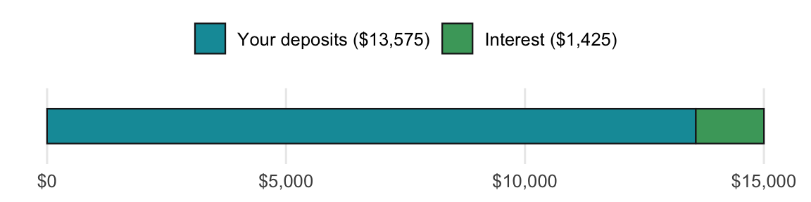
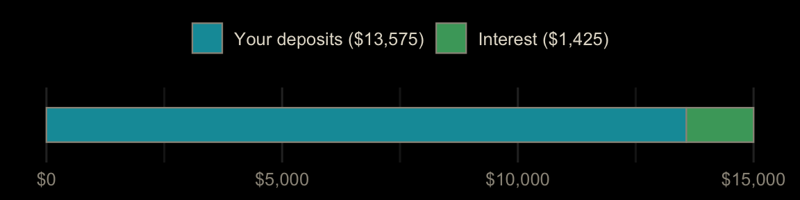
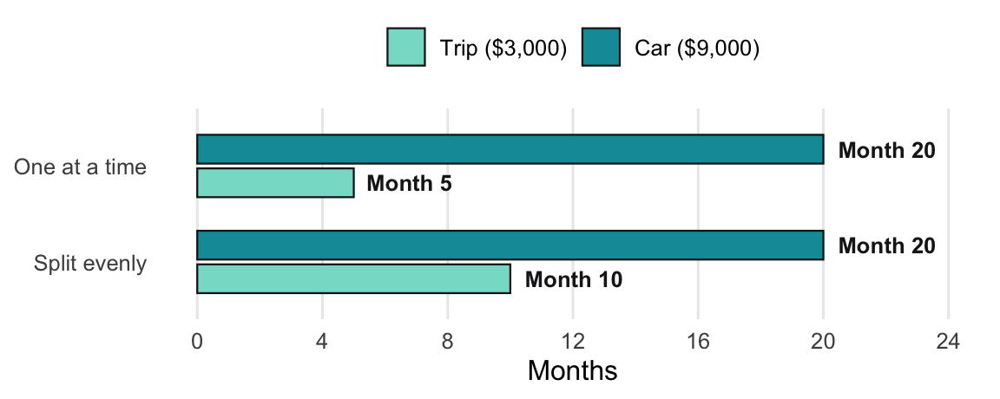
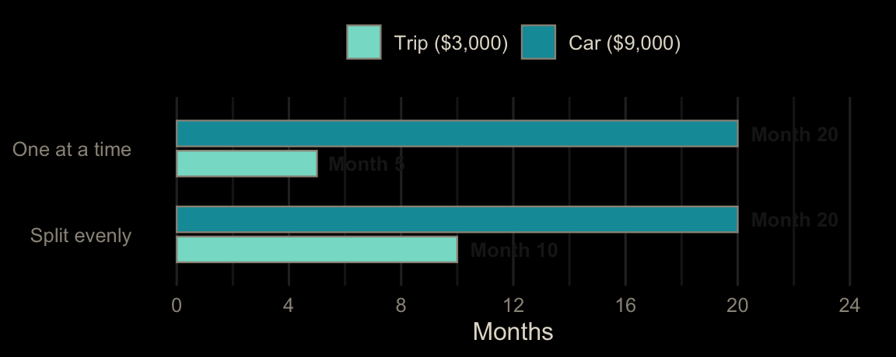

Each topic starts with a real scenario and a bar model, then three levels of exercises. Level 1 (Guided) fills in the blanks of a finished function. Level 2 (Practice) applies it to new numbers. Level 3 (Challenge) asks a new question with little scaffolding. The R and Python exercises run in your browser: click Run Code to try, Submit Answer to check, and use the hint or solution if you get stuck. Excel exercises have a solution you can reveal.
Interest does part of the work, so you can save a little less each month than goal ÷ months. This formula works backward from the future value of a monthly deposit.
Formula: Monthly amount = Goal × r ÷ ((1 + r)^n − 1), where r = yearly rate ÷ 12 and n = number of months


Example: a $15,000 down payment in 5 years at 4% takes about $226 a month, $24 less than the $250 you’d need with no interest. Over five years, interest adds about $1,425.
How to read this result: the monthly amount is your payday transfer. If it doesn’t fit your budget, push the date out before you lower the goal; an extra two years cuts the monthly amount by about 30%.
Fill in the blanks to finish monthly_for_goal(), then find the monthly deposit for a $15,000 down payment in 5 years at 4%.
Put the goal in A2 (15000), the rate in B2 (0.04), and months in C2 (60). Find the monthly deposit in D2.
=PMT(B2/12, C2, 0, -A2)This returns $226.25.
#| exercise: goal_1_py
def monthly_for_goal(goal, annual_rate, months):
r = annual_rate / ______
if r == 0:
return goal / months
return goal * r / ((1 + r) ** ______ - 1)
monthly_for_goal(15000, 0.04, 60)Use a monthly rate, and compound once for every month.
Solution.
def monthly_for_goal(goal, annual_rate, months):
r = annual_rate / 12
if r == 0:
return goal / months
return goal * r / ((1 + r) ** months - 1)
monthly_for_goal(15000, 0.04, 60)#| exercise: goal_1_py
#| check: true
if result is not None and abs(result - 226.2478308) < 0.01:
feedback = {"correct": True, "message": "Right: about $226 a month, $24 less than with no interest."}
else:
feedback = {"correct": False, "message": "Not quite. Divide the rate by 12 and raise to the months."}
feedback#| exercise: goal_1_r
monthly_for_goal <- function(goal, annual_rate, months) {
r <- annual_rate / ______
if (r == 0) return(goal / months)
goal * r / ((1 + r)^______ - 1)
}
monthly_for_goal(15000, 0.04, 60)Use a monthly rate, and compound once for every month.
Solution.
monthly_for_goal <- function(goal, annual_rate, months) {
r <- annual_rate / 12
if (r == 0) return(goal / months)
goal * r / ((1 + r)^months - 1)
}
monthly_for_goal(15000, 0.04, 60)#| exercise: goal_1_r
#| check: true
if (isTRUE(abs(as.numeric(.result) - 226.2478308) < 0.01)) {
list(correct = TRUE, message = "Right: about $226 a month, $24 less than with no interest.")
} else {
list(correct = FALSE, message = "Not quite. Divide the rate by 12 and raise to the months.")
}How much of the $15,000 comes from interest rather than your deposits?
Find the interest in E2.
=A2 - D2*C2This returns $1,425.13.
#| exercise: goal_2_py
#| setup: true
def monthly_for_goal(goal, annual_rate, months):
r = annual_rate / 12
if r == 0:
return goal / months
return goal * r / ((1 + r) ** months - 1)#| exercise: goal_2_py
pmt = monthly_for_goal(15000, 0.04, 60)
______Your deposits are the payment times 60. Interest is the rest of the goal.
Solution.
pmt = monthly_for_goal(15000, 0.04, 60)
15000 - pmt * 60#| exercise: goal_2_py
#| check: true
if result is not None and abs(result - 1425.13015) < 0.01:
feedback = {"correct": True, "message": "Right: about $1,425 of the goal is interest."}
else:
feedback = {"correct": False, "message": "Not quite. Subtract the total deposits from the goal."}
feedback#| exercise: goal_2_r
#| setup: true
monthly_for_goal <- function(goal, annual_rate, months) {
r <- annual_rate / 12
if (r == 0) return(goal / months)
goal * r / ((1 + r)^months - 1)
}#| exercise: goal_2_r
pmt <- monthly_for_goal(15000, 0.04, 60)
______Your deposits are the payment times 60. Interest is the rest of the goal.
Solution.
pmt <- monthly_for_goal(15000, 0.04, 60)
15000 - pmt * 60#| exercise: goal_2_r
#| check: true
if (isTRUE(abs(as.numeric(.result) - 1425.13015) < 0.01)) {
list(correct = TRUE, message = "Right: about $1,425 of the goal is interest.")
} else {
list(correct = FALSE, message = "Not quite. Subtract the total deposits from the goal.")
}Your budget allows $200 a month at most. At 4%, what is the shortest deadline in whole years (1 to 10) that keeps the deposit at or under $200?
Put years 1 to 10 in A2:A11, the monthly deposit in B, and find the shortest deadline at or under $200.
In B2, filled down: =PMT(4%/12, A2*12, 0, -15000). Then:
=MINIFS(A2:A11, B2:B11, "<=200")The answer is 6 years ($184.68 a month).
#| exercise: goal_3_py
#| setup: true
def monthly_for_goal(goal, annual_rate, months):
r = annual_rate / 12
if r == 0:
return goal / months
return goal * r / ((1 + r) ** months - 1)#| exercise: goal_3_py
years = range(1, 11)
# shortest deadline with a deposit of $200 or lessUse min(y for y in years if monthly_for_goal(15000, 0.04, y * 12) <= 200).
Solution.
years = range(1, 11)
min(y for y in years if monthly_for_goal(15000, 0.04, y * 12) <= 200)#| exercise: goal_3_py
#| check: true
if result is not None and abs(result - 6) < 0.001:
feedback = {"correct": True, "message": "Right: 6 years at about $185 a month. A longer runway does the heavy lifting."}
else:
feedback = {"correct": False, "message": "Not quite. Check each deadline's deposit against $200."}
feedback#| exercise: goal_3_r
#| setup: true
monthly_for_goal <- function(goal, annual_rate, months) {
r <- annual_rate / 12
if (r == 0) return(goal / months)
goal * r / ((1 + r)^months - 1)
}#| exercise: goal_3_r
years <- 1:10
# shortest deadline with a deposit of $200 or lessmonthly_for_goal() has an if, so give it one deadline at a time: sapply(years * 12, monthly_for_goal, goal = 15000, annual_rate = 0.04). Then min(years[...]).
Solution.
years <- 1:10
deposit <- sapply(years * 12, monthly_for_goal, goal = 15000, annual_rate = 0.04)
min(years[deposit <= 200])#| exercise: goal_3_r
#| check: true
if (isTRUE(abs(as.numeric(.result) - 6) < 0.001)) {
list(correct = TRUE, message = "Right: 6 years at about $185 a month. A longer runway does the heavy lifting.")
} else {
list(correct = FALSE, message = "Not quite. Check each deadline's deposit against $200.")
}When several goals share one monthly savings amount, the order changes when the first goal finishes. It never changes when the last one finishes.
Formula: Months to finish all goals = Total of all goals ÷ Monthly savings; Months to finish the first goal = First goal ÷ Amount going to it each month


Example: with $600 a month for a $3,000 trip and a $9,000 car, both goals are done in ($3,000 + $9,000) ÷ $600 = 20 months either way. The trip takes 5 months one at a time, or 10 months split evenly.
How to read this result: the order is a choice about which goal you want first, not about saving time overall. Put a fixed date goal (a wedding, a car on its last legs) first, or give it the bigger share.
Fill in the blanks to finish months_to_fund(), then find how many months a $3,000 trip takes at $600 a month.
Put the goal in A2 (3000) and the monthly amount in B2 (600). Find the whole months in C2.
=ROUNDUP(A2 / B2, 0)This returns 5.
#| exercise: seq_1_py
import math
def months_to_fund(goal, monthly):
return math.______(______ / monthly)
months_to_fund(3000, 600)A goal isn’t done until the last dollar is in, so always round up.
Solution.
import math
def months_to_fund(goal, monthly):
return math.ceil(goal / monthly)
months_to_fund(3000, 600)#| exercise: seq_1_py
#| check: true
if result is not None and abs(result - 5) < 0.001:
feedback = {"correct": True, "message": "Right: 5 months."}
else:
feedback = {"correct": False, "message": "Not quite. Divide the goal by the monthly amount and round up."}
feedback#| exercise: seq_1_r
months_to_fund <- function(goal, monthly) {
______(______ / monthly)
}
months_to_fund(3000, 600)A goal isn’t done until the last dollar is in, so always round up.
Solution.
months_to_fund <- function(goal, monthly) {
ceiling(goal / monthly)
}
months_to_fund(3000, 600)#| exercise: seq_1_r
#| check: true
if (isTRUE(abs(as.numeric(.result) - 5) < 0.001)) {
list(correct = TRUE, message = "Right: 5 months.")
} else {
list(correct = FALSE, message = "Not quite. Divide the goal by the monthly amount and round up.")
}Instead of one goal at a time, you split the $600 evenly between the trip and a $9,000 car. When is the trip funded now?
Change B2 to 300.
The same formula returns 10 months: twice as long, though everything is still done at month 20.
#| exercise: seq_2_py
#| setup: true
import math
def months_to_fund(goal, monthly):
return math.ceil(goal / monthly)#| exercise: seq_2_py
months_to_fund(______)The trip now gets half of $600.
Solution.
months_to_fund(3000, 300)#| exercise: seq_2_py
#| check: true
if result is not None and abs(result - 10) < 0.001:
feedback = {"correct": True, "message": "Right: 10 months instead of 5. Splitting delays the first win."}
else:
feedback = {"correct": False, "message": "Not quite. The trip gets $300 a month."}
feedback#| exercise: seq_2_r
#| setup: true
months_to_fund <- function(goal, monthly) {
ceiling(goal / monthly)
}#| exercise: seq_2_r
months_to_fund(______)The trip now gets half of $600.
Solution.
months_to_fund(3000, 300)#| exercise: seq_2_r
#| check: true
if (isTRUE(abs(as.numeric(.result) - 10) < 0.001)) {
list(correct = TRUE, message = "Right: 10 months instead of 5. Splitting delays the first win.")
} else {
list(correct = FALSE, message = "Not quite. The trip gets $300 a month.")
}Three goals, funded one at a time in this order with $700 a month: a $2,000 emergency starter, a $3,000 trip, and a $9,000 car. In which month is each goal finished?
Put the goals in A2:A4. Find the running total in B and the finishing month in C.
In B2: =SUM($A$2:A2), filled down. In C2: =ROUNDUP(B2/700, 0), filled down. The months are 3, 8, and 20.
#| exercise: seq_3_py
#| setup: true
import math
def months_to_fund(goal, monthly):
return math.ceil(goal / monthly)#| exercise: seq_3_py
goals = [2000, 3000, 9000]
# finishing month for each goal, one at a timeEach goal finishes when the running total of goals so far is funded. itertools.accumulate(goals) gives the running totals.
Solution.
from itertools import accumulate
goals = [2000, 3000, 9000]
[months_to_fund(total, 700) for total in accumulate(goals)]#| exercise: seq_3_py
#| check: true
if result == [3, 8, 20]:
feedback = {"correct": True, "message": "Right: months 3, 8, and 20."}
else:
feedback = {"correct": False, "message": "Not quite. Use the running total of the goals, not each goal alone."}
feedback#| exercise: seq_3_r
#| setup: true
months_to_fund <- function(goal, monthly) {
ceiling(goal / monthly)
}#| exercise: seq_3_r
goals <- c(2000, 3000, 9000)
# finishing month for each goal, one at a timeEach goal finishes when the running total of goals so far is funded. cumsum(goals) gives the running totals.
Solution.
goals <- c(2000, 3000, 9000)
months_to_fund(cumsum(goals), 700)#| exercise: seq_3_r
#| check: true
if (isTRUE(all.equal(as.numeric(.result), c(3, 8, 20)))) {
list(correct = TRUE, message = "Right: months 3, 8, and 20.")
} else {
list(correct = FALSE, message = "Not quite. Use the running total of the goals, not each goal alone.")
}